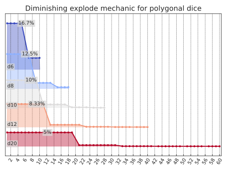

Explosion is a great way to illustrate use of the expand interface.
One way to approximate an exploding die is to recursively re-roll and add to a running total whenever the outcome is the die’s highest.
This framing is intuitive because it maps to well to how exploding dice are typically handled at the table.
>>>fromdyceimportH,HResult,expand>>>defnaive_explode(result:HResult[int])->H[int]|int:...ifresult.outcome==max(result.h):...# If we've rolled the max for this die, add another die roll...# to our existing outcome...returnresult.outcome+expand(naive_explode,result.h)...returnresult.outcome>>>d6=H(6)>>>h=expand(naive_explode,d6)>>>print(h.format(scaled=True,width=65))avg|4.20std|3.261|16.67%|#################################################2|16.67%|#################################################3|16.67%|#################################################4|16.67%|#################################################5|16.67%|#################################################7|2.78%|########8|2.78%|########9|2.78%|########10|2.78%|########11|2.78%|########13|0.46%|#14|0.46%|#15|0.46%|#16|0.46%|#17|0.46%|#19|0.08%|...47|0.00%|
What just happened?
It appears that we went no further than eight rolls (a first roll plus up to seven explosions).
Folks familiar with this domain might recognize the distribution looks mostly correct, but the counts are a bit…off.
With eight rolls, we might also expect to see 48 as the largest outcome, but it’s not present.
The TruncationWarning provides a clue.
The way to eliminate a branch from consideration when calling expand recursively is to explicitly return the empty histogram H({}) from our callback.
(See the always_reroll_on_one example from expand’s docstring.)
Our callback does not explicitly return H({}), but there are two scenarios where that is done implicitly on our behalf.
The first is when a branch’s cumulative path probability falls below min_path_probability (which is what happened in our example above).
And the second is when we’ve exhausted the call stack:
12345678
>>>fromfractionsimportFraction>>>fair_coin=H({0:1,1:1})>>>expand(...naive_explode,...fair_coin,...min_path_probability=Fraction(0),...)# these numbers get *big*H({0:...,...})
For the above line, if expand returns H({}), our callback will also return H({}) for that branch.
This is because adding H({}) to anything is H({}):
12
>>>H({})+1024H({})
This explains why 48 is missing from our results above.
A more illustrative case is trying to “explode” a one-sided die (d1), where no branch is “settled” before exhaustion occurs:
12
>>>expand(naive_explode,H(1))H({})
How do we fix this?
Great question!
Thanks for asking!
It’s easy.
We can check.
1 2 3 4 5 6 7 8 91011
>>>defguarded_explode(result:HResult[int])->H[int]|int:...ifresult.outcome==max(result.h):...inner=expand(guarded_explode,result.h)...ifinner:...# Only return another histogram if we weren't truncated...# somewhere down the line...returnresult.outcome+inner...# Every other case returns our current outcome...returnresult.outcome>>>expand(guarded_explode,d6)H({...,19:1296,...,23:1296,25:216,...,29:216,31:36,...,35:36,37:6,...,41:6,43:1,...,48:1})
But that’s fragile and highly domain-specific.
Instead, we can take advantage of expand’s ability to pass down arbitrary keyword arguments to make our own depth counter.
1 2 3 4 5 6 7 8 9101112
>>>defguarded_explode_n(result:HResult[int],n:int=0)->H[int]|int:...ifn>0andresult.outcome==max(result.h):...inner=expand(guarded_explode_n,result.h,n=n-1)...ifinner:...returnresult.outcome+inner...# Every other case returns our current outcome...returnresult.outcome>>>expand(guarded_explode_n,d6,n=3)H({1:216,2:216,3:216,...,22:1,23:1,24:1})>>>expand(guarded_explode_n,d6,n=0)==d6True
Our callback is still implicitly limited by the min_path_probability parameter, but we can make that go away by setting it to Fraction(0) as we did in our recursion exhaustion illustration above.
To make that the default, we create a simple wrapper:
The above is very nearly the implementation for dyce’s own explode_n, which includes a resolver parameter.
We’ll explore that next.
Using dyce.explode_n
Let’s say we’re considering a new exploding mechanic.
For the first explosion, one must roll the highest outcome on a given die.
A second explosion occurs if either the highest or second highest outcome is rolled.
A third explosion occurs if anything greater than or equal to the third highest outcome is rolled.
Etc.
We’ll never allow explosions if the minimum outcome is rolled.
>>>fromdyceimportexplode_n>>>defexplosions_get_easier_resolver(...result:HResult[T],n_left:int,n_done:int...)->H[T]|T:...return(...result.h...# Explode only maximum value if we haven't exploded yet,...# on [max - 1..max] if we've already exploded once, on...# [max - 2..max] if we've already exploded twice, etc....# ......if(...result.outcome>=max(result.h)-n_done# type: ignore[operator,type-var] # zuban: ignore[arg-type,operator]...and...# ... but never explode on the minimum...result.outcome>min(result.h)# type: ignore[operator,type-var] # zuban: ignore[arg-type,operator]...)...elseresult.outcome...)>>>d10=H(10)>>>h=explode_n(...d10,...n=3,...resolver=explosions_get_easier_resolver,...)>>>print(h.format(scaled=True,width=65))avg|6.19std|4.711|10.00%|##################################################2|10.00%|##################################################3|10.00%|##################################################4|10.00%|##################################################5|10.00%|##################################################6|10.00%|##################################################7|10.00%|##################################################8|10.00%|##################################################9|10.00%|##################################################11|1.00%|#####12|1.00%|#####13|1.00%|#####14|1.00%|#####15|1.00%|#####16|1.00%|#####17|1.00%|#####18|1.00%|#####20|0.10%|21|0.20%|#22|0.20%|#23|0.20%|#24|0.20%|#25|0.20%|#26|0.20%|#27|0.10%|28|0.01%|29|0.03%|30|0.05%|31|0.06%|32|0.06%|33|0.06%|34|0.06%|35|0.06%|36|0.06%|37|0.06%|38|0.05%|39|0.03%|40|0.01%|
Now let’s consider a “diminishing returns” explosion mechanic, where standard polygonal dice “degrade” into their next smallest die for the next explosion.
We’ll draft our resolver so that it can take a progression of dice in the form of a dict mapping the current die to the next one.
importsysfromfunctoolsimportpartialimportmatplotlib.tickerasmtickerfromdyceimportexplode_nfromdyce.viz.matplotlibimportplot_ridgeax=plot_ridge(*(explode_n(d,n=sys.maxsize,# unrestricted recursion, since our resolver determines how deep we goresolver=partial(diminishing_returns_resolver,progression=progression,),)fordinprogression),labels=("d6","d8","d10","d12","d20"),cmap="coolwarm",)ax.xaxis.set_major_locator(mticker.MultipleLocator(2))ax.tick_params(axis="x",labelrotation=60)ax.set_title("Diminishing explode mechanic for polygonal dice")

Interactive version:
For more complicated mechanics that don’t fit neatly into explode_n’s resolver parameter, we can always write our own using the more flexible expand.